Learn More
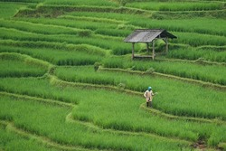
Rice
Planting
- Use high-quality seeds obtained from reputable sources to ensure uniform germination and vigorous plant growth.
- Plant rice seeds in rows or broadcast them evenly across the field, depending on the cultivation method (transplanting or direct seeding).
Land Preparation
- Plow and level the field to create a smooth and uniform seedbed, which facilitates water management and ensures even crop emergence.
- Incorporate organic matter, such as compost or farmyard manure, into the soil to improve fertility and soil structure.
Water Management
- Rice requires ample water for growth, especially during the early stages. Maintain consistent water levels in the field, typically by flooding the paddies.
- Use techniques such as intermittent irrigation or alternate wetting and drying (AWD) to optimize water use efficiency while minimizing water wastage.
Fertilization
- Apply fertilizers based on soil test results and crop nutrient requirements.
- Use a balanced fertilizer formulation containing nitrogen (N), phosphorus (P), and potassium (K), supplemented with micronutrients as needed.
Disease and Pest Management
- Monitor the crop regularly for signs of diseases and pests, such as blast, sheath blight, stem borers, and rice bugs.
- Practice crop rotation, use disease-resistant varieties, and adopt integrated pest management (IPM) strategies to minimize pest damage.
Harvesting and Post-Harvest Handling
- Harvest rice when grains reach physiological maturity and moisture content is appropriate for storage (typically around 20-25%).
- Use appropriate harvesting equipment, such as combine harvesters or sickles, to minimize grain damage and losses.
- Dry harvested rice to safe moisture levels, thresh to separate grains from the straw, and store grains properly to maintain quality and prevent pest infestation.
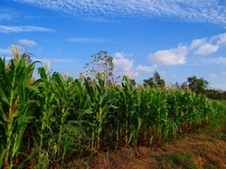
Maize
Planting
- Plant maize seeds at the appropriate planting depth and spacing, following recommended guidelines for your chosen variety.
- Plant seeds in rows or hills, depending on the planting method and local farming practices.
- Consider using seed treatments to protect against soil-borne pathogens and pests and promote early seedling vigor.
Land Preparation
- Prepare the land by plowing and harrowing to create a fine, level seedbed free of weeds and crop residues.
- Incorporate organic matter, such as compost or well-decomposed manure, to improve soil structure and fertility.
Water Management
- Ensure adequate soil moisture during critical growth stages, particularly during germination, flowering, and grain filling.
- Practice mulching to conserve soil moisture, suppress weed growth, and maintain uniform soil temperature.
Fertilization
- Apply fertilizers based on soil test results and maize nutrient requirements, considering factors such as nitrogen (N), phosphorus (P), and potassium (K) levels.
- Use a balanced fertilizer formulation and consider split applications to meet the crop's nutritional needs at different growth stages.
Disease and Pest Management
- Monitor the crop regularly for signs of diseases, such as rust, leaf blight, and stalk rot, as well as pests like armyworms, corn borers, and aphids.
- Practice integrated pest management (IPM) strategies, including crop rotation, resistant varieties, biological control agents, and judicious use of pesticides.
Harvesting and Post-Harvest Handling
- Harvest maize when kernels reach physiological maturity and moisture content is appropriate for storage (typically around 20-25%).
- Use appropriate harvesting equipment, such as combine harvesters or corn pickers, to minimize grain damage and losses.
- Dry harvested maize to safe moisture levels, clean and grade grains, and store them properly to maintain quality and prevent pest infestation.
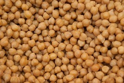
Chickpeas/ Garbanzo beans (Mbaazi wa vifaranga)
Planting
- Plant chickpea seeds at the appropriate planting depth and spacing, following recommended guidelines for your chosen variety.
- Plant seeds in rows or hills, depending on the planting method and local farming practices.
Land Preparation
- Prepare the land by plowing and harrowing to create a fine, level seedbed free of weeds and crop residues.
- Incorporate organic matter, such as compost or well-decomposed manure, to improve soil structure, fertility, and moisture retention.
Water Management
- Ensure adequate soil moisture during critical growth stages, particularly during flowering, pod formation, and seed filling.
- Practice mulching to conserve soil moisture, suppress weed growth, and maintain uniform soil temperature.
Fertilization
- Apply fertilizers based on soil test results and chickpea nutrient requirements, considering factors such as nitrogen (N), phosphorus (P), and potassium (K) levels.
- Use a balanced fertilizer formulation and consider split applications to meet the crop's nutritional needs at different growth stages.
Disease and Pest Management
- Monitor the crop regularly for signs of diseases, such as Ascochyta blight, Fusarium wilt, and Botrytis gray mold, as well as pests like aphids, thrips, and pod borers.
- Practice integrated pest and disease management (IPM) strategies, including crop rotation, resistant varieties, biological control agents, and judicious use of pesticides.
Harvesting and Post-Harvest Handling
- Harvest chickpeas when pods are fully mature and dry, typically when the majority of pods have turned brown and can be easily crushed between fingers.
- Use appropriate harvesting equipment, such as combine harvesters or swathers, to minimize seed damage and losses.
- Clean and grade harvested chickpeas to remove foreign material and damaged seeds, and store them properly in cool, dry conditions to maintain quality and prevent insect infestation.
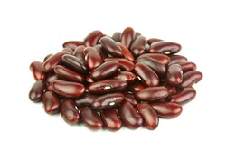
Kidney beans/Red Beans
Planting
- Plant kidney bean seeds at the appropriate planting depth and spacing, following recommended guidelines for your chosen variety.
- Consider inoculating kidney bean seeds with rhizobia bacteria to enhance nitrogen fixation and improve plant growth.
Land Preparation
- Prepare the land by plowing and harrowing to create a fine, level seedbed free of weeds and crop residues.
- Incorporate organic matter, such as compost or well-decomposed manure, to improve soil structure, fertility, and moisture retention.
Water Management
- Ensure adequate soil moisture during critical growth stages, particularly during flowering, pod formation, and seed filling.
- Practice mulching to conserve soil moisture, suppress weed growth, and maintain uniform soil temperature.
Fertilization
- Apply fertilizers based on soil test results and kidney bean nutrient requirements, considering factors such as nitrogen (N), phosphorus (P), and potassium (K) levels.
- Use a balanced fertilizer formulation and consider split applications to meet the crop's nutritional needs at different growth stages.
Disease and Pest Management
- Monitor the crop regularly for signs of diseases, such as rust, blight, and root rot, as well as pests like aphids, beetles, and pod borers.
- Practice integrated pest and disease management (IPM) strategies, including crop rotation, resistant varieties, biological control agents, and judicious use of pesticides.
Harvest and Post-Harvest Handling
- Harvest kidney beans when pods are fully mature but still green, typically when they have reached their full size and seeds are well-formed but still tender.
- Clean and grade harvested kidney beans to remove debris and damaged seeds, and store them properly in cool, dry conditions to maintain quality and prevent insect infestation.
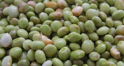
Pigeon Peas (Mbaazi)
Planting
- Plant maize seeds at the appropriate planting depth and spacing, following recommended guidelines for your chosen variety.
- Consider using seed treatments to protect against soil-borne pathogens and pests and promote early seedling vigor.
Land Preparation
- Prepare the land by plowing and harrowing to create a fine, level seedbed free of weeds and crop residues.
- Incorporate organic matter, such as compost or well-decomposed manure, to improve soil structure and fertility.
Water Management
- Ensure adequate soil moisture during critical growth stages, particularly during germination, flowering, and grain filling.
- Practice mulching to conserve soil moisture, suppress weed growth, and maintain uniform soil temperature.
Fertilization
- Apply fertilizers based on soil test results and maize nutrient requirements, considering factors such as nitrogen (N), phosphorus (P), and potassium (K) levels.
- Use a balanced fertilizer formulation and consider split applications to meet the crop's nutritional needs at different growth stages.
Disease and Pest Management
- Monitor the crop regularly for signs of diseases, such as rust, leaf blight, and stalk rot, as well as pests like armyworms, corn borers, and aphids.
- Practice integrated pest management (IPM) strategies, including crop rotation, resistant varieties, biological control agents, and judicious use of pesticides.
Harvesting and Post-Harvest Handling
- Use appropriate harvesting equipment, such as combine harvesters or corn pickers, to minimize grain damage and losses.
- Dry harvested maize to safe moisture levels, clean and grade grains, and store them properly to maintain quality and prevent pest infestation.
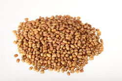
Moth Beans/ Turkish gram (Maharagwe ya nondo)
Planting
- Plant chickpea seeds at the appropriate planting depth and spacing, following recommended guidelines for your chosen variety.
- Plant seeds in rows or hills, depending on the planting method and local farming practices.
Land Preparation
- Prepare the land by plowing and harrowing to create a fine, level seedbed free of weeds and crop residues.
- Incorporate organic matter, such as compost or well-decomposed manure, to improve soil structure, fertility, and moisture retention.
Water Management
- Moth beans are drought-tolerant but benefit from supplemental irrigation during critical growth stages, particularly during flowering and pod formation.
- Practice mulching to conserve soil moisture, suppress weed growth, and maintain uniform soil temperature.
Fertilization
- Apply fertilizers based on soil test results and moth bean nutrient requirements, considering factors such as nitrogen (N), phosphorus (P), and potassium (K) levels.
- Use a balanced fertilizer formulation and consider split applications to meet the crop's nutritional needs at different growth stages.
Disease and Pest Management
- Monitor the crop regularly for signs of diseases, such as powdery mildew, leaf spot, and root rot, as well as pests like aphids, pod borers, and leafhoppers.
- Practice integrated pest and disease management (IPM) strategies, including crop rotation, resistant varieties, biological control agents, and judicious use of pesticides.
Harvesting and Post-Harvest Handling
- Harvest moth beans when pods are fully mature and dry, typically when they have turned brown and can be easily threshed.
- Clean and grade harvested moth beans to remove debris and damaged seeds, and store them properly in cool, dry conditions to maintain quality and prevent insect infestation.
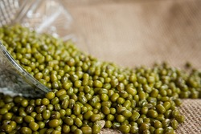
Mung Beans/ Green Gram
Planting
- Plant mung bean seeds at the appropriate planting depth and spacing, following recommended guidelines for your chosen variety.
- Mung beans can be planted directly into the field or transplanted from nurseries.
Land Preparation
- Prepare the land by plowing and harrowing to create a fine, level seedbed free of weeds and crop residues.
- Incorporate organic matter, such as compost or well-decomposed manure, to improve soil structure, fertility, and moisture retention.
Water Management
- Mung beans require adequate soil moisture during critical growth stages, particularly during flowering and pod formation.
- Avoid overwatering, as excessive moisture can lead to diseases such as root rot and damping-off.
Fertilization
- Apply fertilizers based on soil test results and mung bean nutrient requirements, considering factors such as nitrogen (N), phosphorus (P), and potassium (K) levels.
- Use a balanced fertilizer formulation and consider split applications to meet the crop's nutritional needs at different growth stages.
Disease and Pest Management
- Monitor the crop regularly for signs of diseases, such as powdery mildew, anthracnose, and bacterial blight, as well as pests like aphids, pod borers, and leafhoppers.
- Practice integrated pest and disease management (IPM) strategies, including crop rotation, resistant varieties, biological control agents, and judicious use of pesticides.
Harvest and Post-Harvest Handling
- Harvest mung beans when pods are fully mature but still green, typically when they have reached their full size and seeds are well-formed but still tender. Use appropriate harvesting equipment, such as combine harvesters or hand-picking methods, to minimize seed damage and losses.
- Clean and grade harvested mung beans to remove debris and damaged seeds, and store them properly in cool, dry conditions to maintain quality and prevent insect infestation.
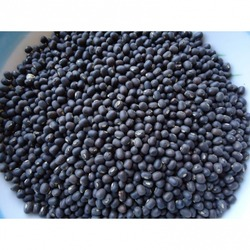
Blackgram/ Black Lentil
Planting
- Plant black gram seeds at the appropriate planting depth and spacing, following recommended guidelines for your chosen variety.
- Black gram can be planted directly into the field or transplanted from nurseries.
Land Preparation
- Prepare the land by plowing and harrowing to create a fine, level seedbed free of weeds and crop residues.
- Incorporate organic matter, such as compost or well-decomposed manure, to improve soil structure, fertility, and moisture retention.
Water Management
- Black gram requires adequate soil moisture during critical growth stages, particularly during flowering and pod formation.
- Avoid overwatering, as excessive moisture can lead to diseases such as root rot and damping-off.
Fertilization
- Apply fertilizers based on soil test results and black gram nutrient requirements, considering factors such as nitrogen (N), phosphorus (P), and potassium (K) levels.
- Use a balanced fertilizer formulation and consider split applications to meet the crop's nutritional needs at different growth stages.
Disease and Pest Management
- Monitor the crop regularly for signs of diseases, such as powdery mildew, anthracnose, and bacterial blight, as well as pests like aphids, pod borers, and leafhoppers.
- Practice integrated pest and disease management (IPM) strategies, including crop rotation, resistant varieties, biological control agents, and judicious use of pesticides.
Harvesting and Post-Harvest Handling
- Harvest black gram when pods are fully mature but still green, typically when they have reached their full size and seeds are well-formed but still tender.
- Clean and grade harvested black gram to remove debris and damaged seeds, and store them properly in cool, dry conditions to maintain quality and prevent insect infestation.
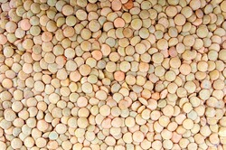
Lentil
Planting
- Plant lentil seeds at the appropriate planting depth and spacing, following recommended guidelines for your chosen variety.
- Lentils can be planted directly into the field or transplanted from nurseries.
Land Preparation
- Prepare the land by plowing and harrowing to create a fine, level seedbed free of weeds and crop residues.
- Incorporate organic matter, such as compost or well-decomposed manure, to improve soil structure, fertility, and moisture retention.
Fertilization
- Apply fertilizers based on soil test results and lentil nutrient requirements, considering factors such as nitrogen (N), phosphorus (P), and potassium (K) levels.
- Use a balanced fertilizer formulation and consider split applications to meet the crop's nutritional needs at different growth stages.
Water Management
- Lentils require adequate soil moisture during critical growth stages, particularly during flowering and pod formation.
- Avoid overwatering, as excessive moisture can lead to diseases such as root rot and damping-off.
Disease and Pest Management
- Monitor the crop regularly for signs of diseases, such as ascochyta blight, anthracnose, and powdery mildew, as well as pests like aphids, weevils, and pod borers.
- Practice integrated pest and disease management (IPM) strategies, including crop rotation, resistant varieties, biological control agents, and judicious use of pesticides.
Harvesting and Post-Harvest Handling
- Harvest lentils when pods are fully mature but still green, typically when they have reached their full size and seeds are well-formed but still tender.
- Clean and grade harvested lentils to remove debris and damaged seeds, and store them properly in cool, dry conditions to maintain quality and prevent insect infestation.
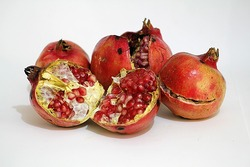
Pomegranate Fruit
Planting
- Space trees at least 10-15 feet apart to allow for proper growth and airflow.
- Dig planting holes twice as wide and deep as the root ball, and backfill with well-amended soil.
Soil Preparation and Fertilization
- Conduct soil tests to determine nutrient levels and pH, and amend the soil as necessary.
- Apply a balanced fertilizer with higher potassium (K) content, such as 8-8-8 or 10-10-10, in early spring and late summer.
- Mulch around the base of trees to conserve moisture and suppress weed growth.
Water Management
- Provide regular irrigation, especially during the first few years after planting and during fruit development.
- Avoid overwatering, as pomegranates are drought-tolerant but sensitive to waterlogged conditions.
Pruning
- Prune pomegranate trees annually during the dormant season to remove dead, damaged, or crossing branches.
- Train young trees to a central leader or open-center shape to promote balanced growth and fruit production.
Pollination
- Pomegranate trees are self-pollinating but benefit from cross-pollination for increased fruit set and yield.
- Introduce bee colonies or plant pollinator-attracting flowers nearby to encourage pollination.
Harvesting
- Harvest pomegranates when the fruit reaches full color and feels heavy for its size.
- Cut the fruit from the tree using pruning shears, leaving a short stem attached.
- Handle harvested fruit carefully to avoid bruising and damage.
Post-Harvest Handling
- Prioritize selling or consuming harvested fruit with minor blemishes or damage first, as they have a shorter shelf life.
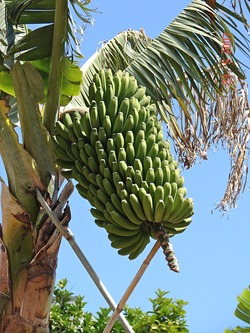
Bananas
Planting
- Plant healthy banana suckers or tissue-cultured plantlets obtained from reputable sources.
- Ensure the planting depth is such that the growing point (corm) of the sucker is just above the soil surface.
Land Preparation
- Conduct soil tests to determine nutrient levels and pH, and amend the soil as necessary.
- Prepare planting holes or trenches spaced appropriately for the chosen planting system.
Fertilization
- Apply balanced fertilizers rich in potassium (K), such as 6-2-12 or 8-10-16, to promote healthy growth and fruit development.
- Apply fertilizers in split doses throughout the growing season to avoid nutrient leaching and excess buildup.
Water Management
- Ensure consistent soil moisture levels, especially during the active growth and fruiting stages.
- Mulch around banana plants to conserve soil moisture and suppress weed growth.
Disease and Pest Management
- Monitor banana plants regularly for signs of pests such as banana weevils, nematodes, and aphids.
- Manage diseases such as Panama disease (Fusarium wilt) and Sigatoka leaf spot through preventive measures like sanitation, crop rotation, and resistant varieties.
Harvesting and Post-Harvest Handling
- Harvest banana bunches when they reach the desired size, color, and maturity stage based on the variety.
- Handle harvested bananas with care to prevent bruising and damage to the fruit.
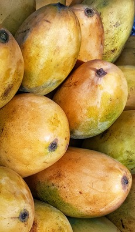
Mango
Planting
- Plant mango trees during the early rainy season to facilitate establishment.
- Space trees according to the recommended density for the chosen variety and planting system.
Fertilization
- Apply balanced fertilizers with a higher potassium (K) content, such as 6-6-12 or 8-3-9, to promote flowering, fruiting, and overall tree health.
- Apply fertilizers in split doses throughout the growing season, with additional applications during flowering and fruit set.
Water Management
- Provide regular irrigation, especially during the dry season and periods of fruit development.
- Mulch around mango trees to conserve soil moisture, suppress weed growth, and maintain even soil temperature.
Pruning
- Prune mango trees annually during the dormant season to remove dead, diseased, or crossing branches.
- Thin out excess branches to improve airflow and light penetration within the canopy.
Harvesting
- Harvest mangoes when they reach the desired maturity stage based on variety, size, color, aroma, and firmness.
- Use hand-picking or pole-picking methods to harvest mature mangoes gently to avoid bruising or damage.
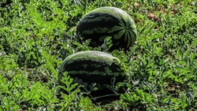
Watermelon
Planting
- Space plants at least 3 to 5 feet apart in rows, with rows spaced 6 to 10 feet apart, depending on the variety and available space.
- Plant seeds at a depth of 1 inch, and cover them lightly with soil. If transplanting seedlings, plant them at the same depth as they were in the nursery containers.
Land Preparation
- Conduct soil tests to determine nutrient levels and pH, and amend the soil as necessary.
- Prepare raised beds or planting hills to improve soil drainage and warm up the soil for early planting.
Fertilization
- Apply a balanced fertilizer with higher phosphorus (P) and potassium (K) content, such as 10-10-10 or 15-15-15, before planting.
- Consider using organic fertilizers such as compost or well-decomposed manure to improve soil fertility and structure.
Water Management
- Provide consistent soil moisture throughout the growing season, especially during flowering, fruit set, and fruit development.
- Mulch around watermelon plants to conserve soil moisture, suppress weed growth, and maintain even soil temperature.
Disease and Pest Management
- Monitor watermelon plants regularly for signs of pests such as aphids, cucumber beetles, and spider mites.
- Manage diseases such as powdery mildew, downy mildew, and fusarium wilt through preventive measures like crop rotation, sanitation, and fungicide applications.
Support and Pruning
- Provide support for larger watermelon varieties with trellises or slings to prevent fruit from contacting the soil and developing rot.
- Prune watermelon vines selectively to remove excess growth and improve airflow within the canopy, which can help reduce disease pressure and improve fruit quality.
Harvesting
- Harvest watermelons when they reach full maturity based on variety-specific characteristics such as color, size, texture, and sound.
- Use a sharp knife or pruning shears to cut the fruit from the vine, leaving a short stem attached.
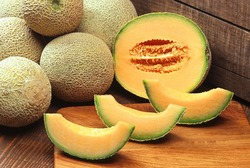
Muskmelons
Planting
- Space plants at least 2 to 3 feet apart in rows, with rows spaced 4 to 6 feet apart, depending on the variety and available space.
- Plant seeds at a depth of 1 inch, and cover them lightly with soil. If transplanting seedlings, plant them at the same depth as they were in the nursery containers.
Fertilization
- Apply a balanced fertilizer with higher phosphorus (P) and potassium (K) content, such as 10-10-10 or 15-15-15, before planting.
- Consider using organic fertilizers such as compost or well-decomposed manure to improve soil fertility and structure.
Water Management
- Provide consistent soil moisture throughout the growing season, especially during flowering, fruit set, and fruit development.
- Mulch around muskmelon plants to conserve soil moisture, suppress weed growth, and maintain even soil temperature.
Pollination
- Muskmelon flowers require pollination to set fruit, so ensure there are plenty of pollinators such as bees present in the area.
- Avoid using insecticides during flowering to prevent harm to pollinators.
Disease and Pest Management
- Monitor muskmelon plants regularly for signs of pests such as aphids, cucumber beetles, and spider mites.
- Manage diseases such as powdery mildew, downy mildew, and bacterial wilt through preventive measures like crop rotation, sanitation, and fungicide applications.
Support and Pruning
- Provide support for larger muskmelon varieties with trellises or slings to prevent fruit from contacting the soil and developing rot.
- Prune muskmelon vines selectively to remove excess growth and improve airflow within the canopy, which can help reduce disease pressure and improve fruit quality.
Harvesting
- Harvest muskmelons when they reach full maturity based on variety-specific characteristics such as color, size, texture, and aroma.
- Use a sharp knife or pruning shears to cut the fruit from the vine, leaving a short stem attached.
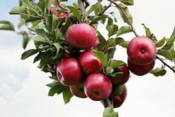
Apple
Land Preparation
- Conduct soil tests to determine nutrient levels and pH, and amend the soil as necessary.
- Prepare planting holes or trenches spaced appropriately for the chosen planting system.
Planting
- Space trees according to their expected size at maturity, typically 15-25 feet apart in rows with 20-30 feet between rows.
- Plant trees at the same depth they were in the nursery container, ensuring the graft union is above the soil surface.
Fertilization
- Apply balanced fertilizers with a higher phosphorus (P) and potassium (K) content, such as 10-10-10 or 5-10-10, before planting.
- Consider organic fertilizers such as compost or well-decomposed manure to improve soil health and fertility.
Water Management
- Provide regular irrigation, especially during dry periods and fruit development stages..
- Mulch around apple trees to conserve soil moisture, suppress weed growth, and maintain even soil temperature.
Pollination
- Most apple varieties require cross-pollination from compatible cultivars for optimal fruit set and yield.
- Plant at least two different apple varieties with overlapping bloom times to ensure adequate pollination.
Pruning
- Prune apple trees annually during the dormant season to remove dead, diseased, or crossing branches.
- Train young trees to a central leader or modified central leader shape to promote balanced growth and fruit production.
Disease and Pest Management
- Monitor apple trees regularly for signs of pests such as aphids, codling moths, apple maggots, and mites.
- Manage diseases such as apple scab, powdery mildew, fire blight, and cedar apple rust through preventive measures like sanitation, pruning, and fungicide applications.
Harvesting
- Harvest apples when they reach full maturity based on variety-specific characteristics such as color, size, texture, and flavor.
- Use a twisting motion or a sharp pair of pruning shears to harvest apples gently from the tree.
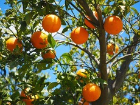
Oranges
Land Preparation
- Conduct soil tests to determine nutrient levels and pH, and amend the soil as necessary.
- Prepare planting holes or trenches spaced appropriately for the chosen planting system.
Planting
- Space trees according to their expected size at maturity, typically 12-25 feet apart in rows with 15-25 feet between rows.
- Plant trees at the same depth they were in the nursery container, ensuring the graft union is above the soil surface.
Fertilization
- Apply balanced fertilizers with a higher nitrogen (N) and potassium (K) content, such as 8-8-8 or 10-10-10, before planting.
- Apply fertilizers in split doses throughout the growing season, with additional applications during flowering and fruiting periods.
Water Management
- Provide regular irrigation, especially during dry periods and fruit development stages.
- Mulch around orange trees to conserve soil moisture, suppress weed growth, and maintain even soil temperature.
Pollination
- Most orange varieties are self-pollinating, but pollinators such as bees can enhance fruit set and yield.
- Maintain habitat for pollinators by planting flowering plants and avoiding the use of pesticides harmful to bees during flowering periods.
Disease and Pest Management
- Monitor orange trees regularly for signs of pests such as aphids, citrus leafminer, citrus psyllid, and mites.
- Manage diseases such as citrus greening (huanglongbing), citrus canker, and citrus black spot through preventive measures like sanitation, pruning, and fungicide applications.
Pruning
- Prune orange trees annually during the dormant season to remove dead, diseased, or crossing branches.
- Shape trees to a central leader or modified central leader form to promote balanced growth and fruit production.
Harvesting
- Harvest oranges when they reach full maturity based on variety-specific characteristics such as color, size, texture, and flavor.
- Use hand-picking or pole-picking methods to harvest oranges gently from the tree.
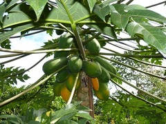
Papaya
Land Preparation
- Conduct soil tests to determine nutrient levels and pH, and amend the soil as necessary.
- Prepare raised beds or planting mounds to improve soil drainage and prevent waterlogging.
Planting
- Space plants at least 6 to 10 feet apart in rows, with rows spaced 10 to 15 feet apart.
- Plant seeds at a depth of 1 inch, and cover them lightly with soil. If transplanting seedlings, plant them at the same depth as they were in the nursery containers.
Fertilization
- Apply balanced fertilizers with a higher potassium (K) content, such as 10-10-20 or 8-3-9, to promote flowering, fruiting, and overall plant health.
- Apply fertilizers in split doses throughout the growing season, with additional applications during flowering and fruit set.
Water Management
- Provide consistent soil moisture throughout the growing season, especially during the flowering, fruit set, and fruit development stages.
- Mulch around papaya plants to conserve soil moisture, suppress weed growth, and maintain even soil temperature.
Pollination
- Papaya plants are usually self-pollinating, but fruit set can be improved with cross-pollination from nearby plants.
- Maintain habitat for pollinators such as bees and butterflies to enhance pollination.
Support and Pruning
- Provide support for papaya plants with stakes or trellises to prevent toppling under the weight of heavy fruit.
- Prune papaya plants selectively to remove dead or diseased leaves and improve airflow within the canopy.
Disease and Pest Management
- Monitor papaya plants regularly for signs of pests such as aphids, mealybugs, papaya fruit flies, and spider mites.
- Manage diseases such as powdery mildew, papaya ringspot virus, and anthracnose through preventive measures like sanitation, crop rotation, and fungicide applications.
Harvesting
- Harvest papayas when they reach full maturity based on variety-specific characteristics such as color, size, texture, and aroma.
- Use a sharp knife or pruning shears to cut the fruit from the plant, leaving a short stem attached.
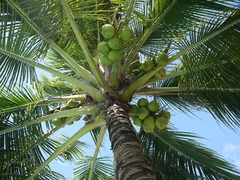
Coconut
Land Preparation
- Conduct soil tests to determine nutrient levels and pH, and amend the soil as necessary.
- Prepare planting pits or trenches spaced appropriately for the chosen planting system.
Planting
- Space plants at least 7 to 10 meters apart in rows, with rows spaced 7 to 10 meters apart for Tall varieties, and closer for Dwarf varieties.
- Plant seedlings at the same depth they were in the nursery container, ensuring the growing point (bud) is just above the soil surface.
Fertilization
- Apply organic fertilizers such as compost or well-decomposed manure before planting to improve soil fertility and structure.
- Side-dress with additional fertilizer containing nitrogen (N), phosphorus (P), and potassium (K) in subsequent years based on soil test results and tree growth.
Water Management
- Provide irrigation during dry periods, especially for newly planted coconut seedlings, to ensure establishment and healthy growth.
- Mulch around coconut plants to conserve soil moisture, suppress weed growth, and maintain even soil temperature.
Disease and Pest Management
- Monitor coconut palms regularly for signs of pests such as coconut mites, rhinoceros beetles, and coconut leaf beetles.
- Manage diseases such as coconut lethal yellowing, root wilt, and stem bleeding through preventive measures like sanitation, resistant varieties, and fungicide applications.
Pruning and Maintenance
- Prune coconut palms annually to remove dead, diseased, or damaged fronds and improve airflow within the canopy.
- Remove any suckers or offshoots that emerge around the base of the palm to maintain a single-stemmed trunk.
Harvesting
- Harvest coconuts when they reach full maturity based on variety-specific characteristics such as nut size, color, and sound.
- Use a long-handled harvesting tool or climb the tree to cut ripe coconuts from the bunch, ensuring safety measures are followed.
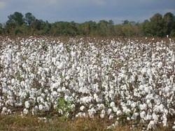
Cotton
Land Preparation
- Conduct soil tests to determine nutrient levels and pH, and amend the soil as necessary.
- Prepare the seedbed by tilling the soil and forming raised beds or planting rows.
Planting
- Space plants approximately 6 to 12 inches apart in rows spaced 36 to 48 inches apart, depending on the variety and planting density.
- Plant seeds at a depth of 1/2 to 1 inch, ensuring good seed-to-soil contact.
Fertilization
- Apply balanced fertilizers with a higher nitrogen (N) content and supplemental phosphorus (P) and potassium (K) according to soil test recommendations.
- Side-dress with additional nitrogen fertilizer during the growing season, especially during the early vegetative stage and flowering.
Water Management
- Provide regular irrigation to cotton plants, especially during periods of drought or heat stress.
- Monitor soil moisture levels and adjust irrigation practices accordingly to prevent waterlogging or drought stress.
Disease Management
- Monitor cotton plants for signs of diseases such as Fusarium wilt, Verticillium wilt, bacterial blight, and cotton leaf curl virus.
- Implement cultural practices such as crop rotation, proper irrigation management, and sanitation to reduce disease incidence and severity.
Harvesting
- Harvest cotton when bolls have matured and fibers have reached full development, typically 120 to 150 days after planting.
- Use mechanical cotton pickers or strippers to harvest mature cotton bolls efficiently.
- Handle harvested cotton with care to avoid fiber damage and contamination.
Ginning
- Send harvested cotton to a cotton gin for ginning, which separates the fiber from the seeds and other plant materials.
- Clean and grade the ginned cotton to remove impurities and prepare it for processing into textile products.
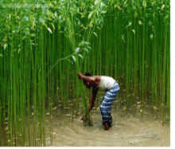
Jute Plant
Land Preparation
- Conduct soil tests to determine nutrient levels and pH, and amend the soil as necessary.
- Prepare the seedbed by plowing and harrowing the soil to a fine tilth.
Planting
- Sow seeds at a depth of 2 to 3 cm and spacing of 10 to 15 cm between rows and 5 to 7 cm between plants within rows.
- Ensure uniform seed placement and adequate soil moisture for germination.
Fertilization
- Apply organic fertilizers such as compost or well-decomposed manure before planting to improve soil fertility and structure.
- Avoid excessive use of phosphorus (P) and potassium (K) fertilizers, as jute is relatively tolerant to soil deficiencies of these nutrients.
Water Management
- Provide regular irrigation to jute plants, especially during periods of dry weather and the early growth stage.
- Monitor soil moisture levels and adjust irrigation practices accordingly to prevent water stress or waterlogging.
Disease and Pest Management
- Monitor jute plants regularly for signs of pests such as aphids, jute semiloopers, jute hairy caterpillars, and jute leaf-eating beetles.
- Implement cultural practices such as proper irrigation management, crop rotation, and sanitation to reduce disease incidence and severity.
Harvesting
- Harvest jute plants when they reach the flowering stage and before seed formation, typically 120 to 150 days after planting.
- Cut jute plants close to the ground using sharp sickles or knives to obtain long and clean fiber.
Fiber Extraction
- Ret (or soak) harvested jute bundles in water bodies or shallow ponds for several days to allow the fibers to separate from the woody stem.
- After retting, strip the outer bark from the jute stems and extract the fibers manually or using mechanical decortication machines.

Coffee
Land Preparation
- Conduct soil tests to determine nutrient levels and pH, and amend the soil as necessary.
- Prepare planting beds or raised mounds to improve soil drainage and root aeration.
Planting
- Space plants at least 2 to 4 meters apart in rows, with rows spaced 2 to 4 meters apart, depending on the variety and planting density.
- Dig planting holes slightly larger than the root ball of the seedling and backfill with soil, ensuring the root collar is level with the soil surface
Shade Management
- Consider providing shade for young coffee plants to protect them from excessive sun exposure and promote gradual growth.
- Use shade trees such as banana, plantain, avocado, or leguminous trees to provide canopy cover without competing with coffee plants for nutrients and water.
Fertilization
- Apply organic fertilizers such as compost, poultry manure, or coffee pulp before planting to improve soil fertility and structure.
- Side-dress with additional fertilizers containing nitrogen (N), phosphorus (P), and potassium (K) during the growing season, based on soil test results and plant nutrient requirements.
Water Management
- Provide regular irrigation to coffee plants, especially during dry periods and flowering/fruiting stages.
- Mulch around coffee plants with organic materials such as coffee husks, straw, or leaves to conserve soil moisture and suppress weed growth.
Disease and Pest Management
- Monitor coffee plants regularly for signs of pests such as coffee berry borer, leaf rust, coffee leaf miner, and nematodes.
- Implement disease-resistant coffee varieties, shade management practices, and proper sanitation to minimize pest and disease pressure.
Pruning
- Prune coffee plants annually during the dry season to remove dead, diseased, or overgrown branches and promote open canopy structure.
- Prune coffee plants annually during the dry season to remove dead, diseased, or overgrown branches and promote open canopy structure.
- Prune mature coffee plants selectively to rejuvenate growth, remove unproductive branches, and maintain desired plant height.
Harvesting
- Harvest ripe coffee cherries selectively by hand-picking or strip-picking, depending on the variety and harvest method.
- Collect only fully ripe cherries with uniform color and firm texture to ensure high-quality beans.
- Handle harvested cherries with care to avoid bruising and fermentation, and transport them promptly to processing facilities.